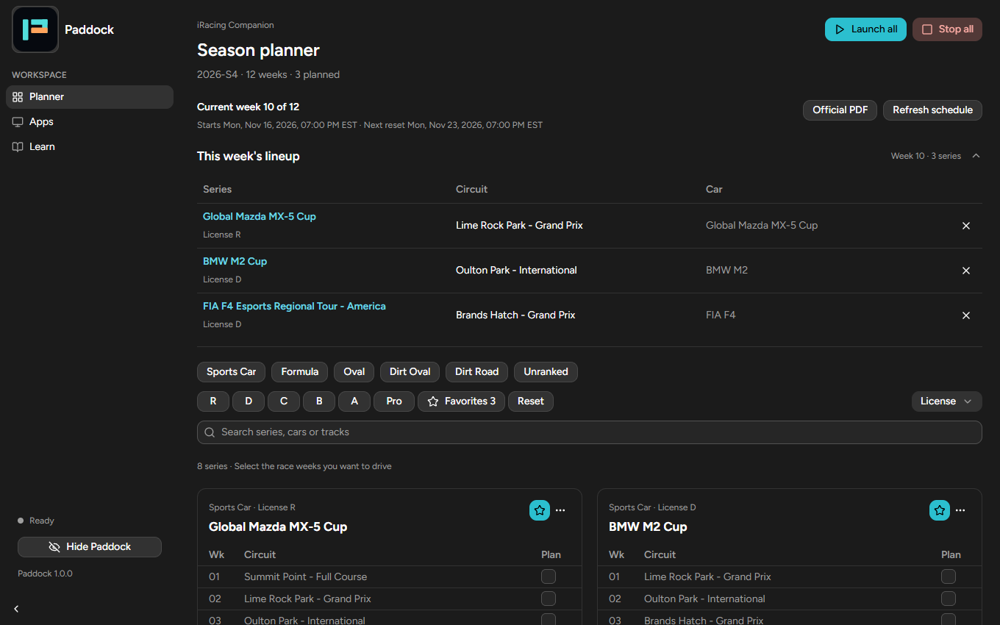

This week’s lineup
Check Plan on the weeks you want to race. The current week’s selected series, circuits and cars appear in a collapsible lineup.
Favorites move to the top of the catalog. Select a lineup name to jump to its schedule.
Paddock 1.0 / iRacing Companion
Plan your iRacing weeks. Choose which companion apps to launch and how each app’s window behaves. A separate dashboard is available for the MOZA CM2.
Windows x64 · WebView2 required · Source on GitHub

Windows app
Check Plan on the weeks you want to race. The current week’s selected series, circuits and cars appear in a collapsible lineup.
Favorites move to the top of the catalog. Select a lineup name to jump to its schedule.
Choose which apps are included in Launch all and Stop all. Set each app’s executable and select Window or Background for startup.
Add detected programs or browse to an executable. Profiles let you save different combinations of these settings.
Choose how each app starts. Background hides its management window once; a window you reopen afterward stays visible.
Advanced settings can optionally hide a management window that reappears after iRacing exits. This is off by default.
Previews use sample app data. Full app demo
Default-location detection
iRacing UI · SimHub · Trading Paints · Garage 61 · Edge Overlays · Crew Chief · GO Fast · MOZA Pit House
Detected programs are added only when you select them.
Optional dashboard
A native 1280 × 720 dashboard for the MOZA CM2. Requires SimHub and AZOM.
Download CM2 dashboardRPM, gear and speed sit between brake and throttle bars. Position, fuel, ABS, TC, brake bias and ECU map share the driving view.
Recent lap numbers and times require the supplied DNR mappings.
Flags, pit and limiter messages, and changes to car settings appear briefly in the center of the screen.
The driving layout returns after the notification.
The idle screen appears when the game is not running. Enter a session to switch to the driving view.
Set your name and number with the included customization helper or MOZA Dashboard Studio.
Previews use the native renderer with simulated telemetry. Available values depend on the car, session and telemetry source. Full CM2 demo
The Windows app and CM2 dashboard can be used independently.
Keep paddock.exe and
WebView2Loader.dll together in a folder you can
write to. Retain the data folder when updating.
Add detected apps or use Browse executable. Set the launch mode and save the setup in a profile.
Open Planner, refresh the official schedule, favorite your series and check Plan on the weeks you want to drive.
Requires Windows x64 and the Microsoft Edge WebView2 Runtime.
Download Windows appUse a MOZA CM2 with SimHub and the AZOM plugin. Install the supported DNR integration if you want recent-lap history.
The .mzdash is self-contained and needs no
external images. Follow the included README to apply the
supplied channel mappings.
Use AZOM's CM2 device file manager to upload the file, select it on the display, and enable dashboard telemetry.
Requires separate hardware and plugins. Paddock's Windows app is not required to run the dashboard.
Download CM2 packageYour companion apps stay open. Paddock closes the included apps when you choose Stop all. It does not use the iRacing UI closing as a signal to end your setup.
It requests that the app's management window be hidden during startup. Once startup hiding is complete, reopening a window leaves it visible. A background app may still run its normal overlays or telemetry features; an unknown app's behavior may vary.
Trading Paints has a short, two-second startup wait before hiding, to allow its initial window and tray setup to finish.
Each app has an optional Advanced setting to re-hide its management window after the game exits. It is off by default. Edge Overlays is one example where this can be useful.
This is a timed, one-shot action. A management window you open manually during that interval may also be hidden, so enable it only when you want that behavior.
Refreshing into another season clears the old season's Plan selections and undo history. Your series favorites and app profiles stay. Refreshing the same season keeps its plans.
Profiles, preferences and race plans are stored locally in Paddock's data folder. Paddock does not ask for your iRacing password. Schedule refresh downloads iRacing's publicly available schedule.
No. It demonstrates the native dashboard using simulated telemetry so you can see its idle state, driving layout and notifications. The supplied dashboard uses live bindings when connected to your setup. Recent-lap history needs the supplied DNR channel mappings.
Yes. Open a GitHub issue with the app name, version, installation location and what you expected to happen. You can add an executable manually even if it is not in the detection catalog.